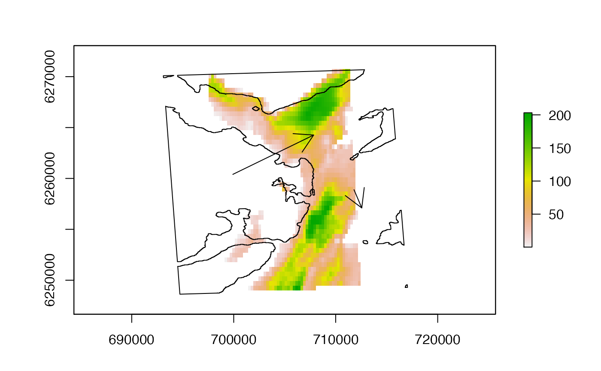

R/spatial_tools.R
segments_cross_barrier.RdGiven a sequence of `starting' and `ending' locations (start and end), this function determines whether or not the Euclidean path (`segment') between each location pair crosses a barrier.
segments_cross_barrier(start, end, barrier, distance = NULL, mobility = NULL)
| start | A two-column matrix of coordinates that defines the `start' location of each segment. |
|---|---|
| end | A two-column matrix of coordinates that defines the `end' location of each segment. |
| barrier | A simple feature geometry that defines the barrier (see |
| distance | (optional) A |
| mobility | (optional) If |
The function returns a one-column matrix, with each row corresponding to a row in start/end, with a logical value that defines whether or not the Euclidean path segment connecting those two locations crosses the barrier (TRUE) or not (FALSE).
Edward Lavender
This function was motivated by the need to support internal routines in pf_simplify. Specifically, the function is used to minimise the number of shortest-distance calculations that are required by restricting calculations (if applicable) to particle pairs that require movement around a barrier, such as the coastline. (In these cases, Euclidean distances may be poor approximations of shortest distances that an aquatic animal must travel.)
The function implements a three-step approach to derive barrier overlaps:
The function determines whether or not the minimum convex polygon (i.e., boundary box) around start/end intersects with barrier. If it does not, then no location segments can overlap with the barrier. This step is fast.
If the locations' minimum convex polygon intersects with the barrier, and if distance and mobility have been supplied, the function extracts the distance of each location in start and end from the barrier. Location pairs for which both locations are further than mobility from the barrier are dropped. This step is also fast.
For any remaining location pairs, the function links each start and end location and determines whether or not each linkage (`segment') intersects with the barrier using sf routines. This step can be slow for large numbers of locations (hence the first two filtering steps).
The following criteria apply to applications of this function:
The number of observations in start and end must match.
The coordinate reference system for start, end and barrier must match.
If distance is supplied, mobility must also be supplied.
The function requires the sf_linestring and st_intersects functions.
For speed in iterative applications, the function does not check whether or not these criteria are met.
raster::lines(dat_coast)barrier <- sf::st_as_sf(dat_coast) #### Example (1): Implement function using barrier only ## Define example starting and ending locations start <- matrix(c(701854.9, 6260399, 709202.5, 6258892), ncol = 2, byrow = TRUE) end <- matrix(c(706753.3, 6264261, 709673.5, 6257102), ncol = 2, byrow = TRUE) ## Visualise segments # ... The first segment crosses the coastline (our barrier) # ... The second segment does not cross the coastline (our barrier) graphics::arrows(x0 = start[1, 1], y0 = start[1, 2], x1 = end[1, 1], y1 = end[1, 2])## Implement function segments_cross_barrier(start, end, barrier = barrier)#> [,1] #> [1,] TRUE #> [2,] FALSE#### Example (2): Implement function using barrier with distance and mobility ## Define distances from barrier dat_dist <- raster::rasterize(dat_coast, dat_gebco) dat_dist <- raster::distance(dat_dist)#> Error in .local(x, y = y, ...): RasterLayer has no NA cells (for which to compute a distance)## Implement function for a specified mobility parameter segments_cross_barrier(start, end, barrier = barrier, distance = dat_dist, mobility = 500)#> [,1] #> [1,] FALSE #> [2,] FALSE#### Example (3): With many locations, supplying distance improves speed ## Sample a large number of random starting/ending locations start <- raster::sampleRandom(dat_gebco, size = 3000, xy = TRUE)[, 1:2]#> Error in .local(x, size, ...): size <= ncell(x) is not TRUE#> Error in .local(x, size, ...): size <= ncell(x) is not TRUE## Compare the duration of the function without/with distance included # The first method without distance is much slower than the second method # (~0.714 s versus 0.131 s for 3000 locations) system.time( int_1 <- segments_cross_barrier(start, end, barrier = barrier) )#> user system elapsed #> 0.015 0.000 0.015system.time( int_2 <- segments_cross_barrier(start, end, barrier = barrier, distance = dat_dist, mobility = 500) )#> user system elapsed #> 0.004 0.000 0.004#> [1] FALSE